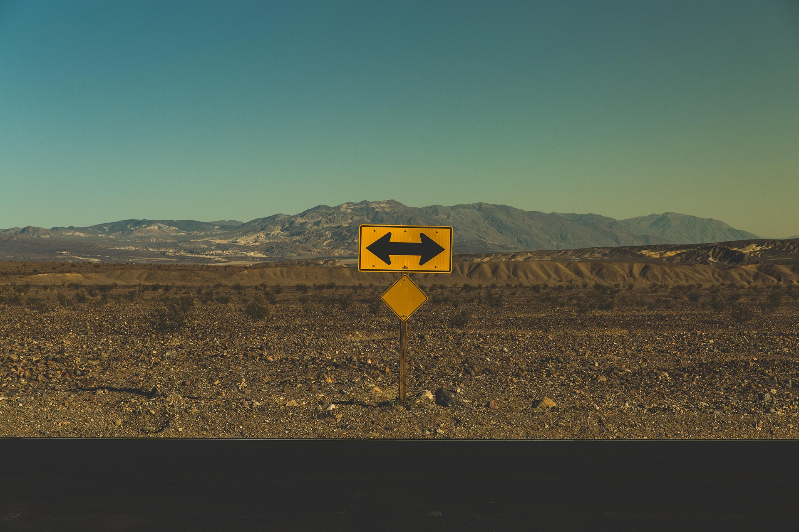

Introduction
Why are some villages disappearing while cities keep growing? In this project, you will investigate the phenomenon of rural depopulation in Spain and create an awareness campaign in English to propose solutions and encourage sustainable rural development.
